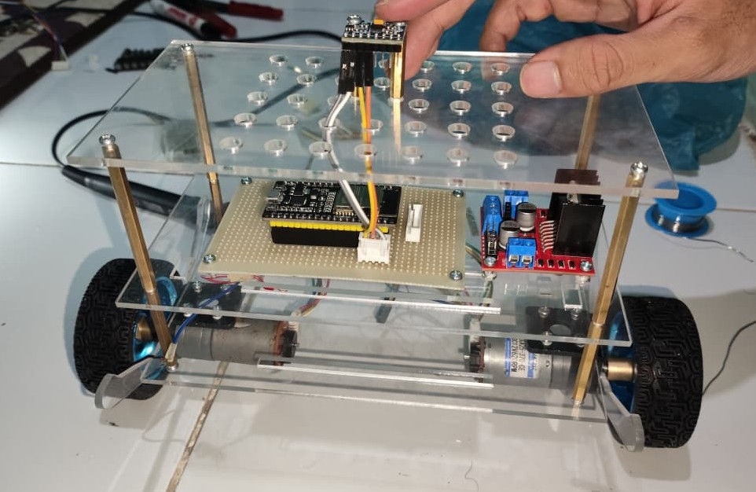
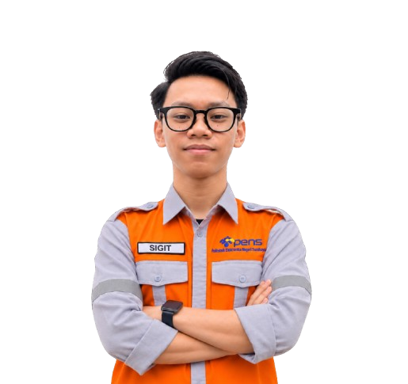
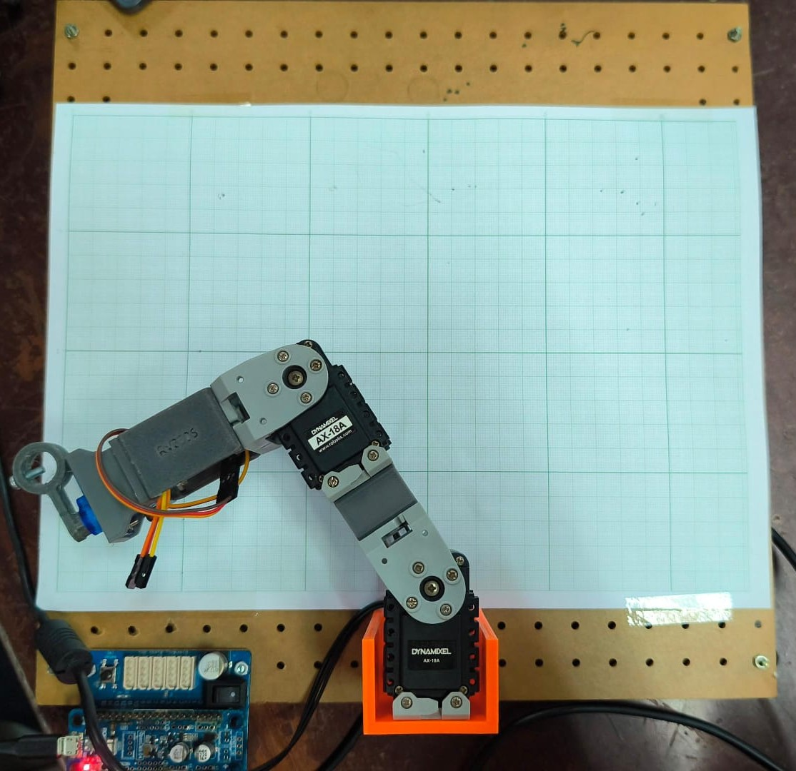
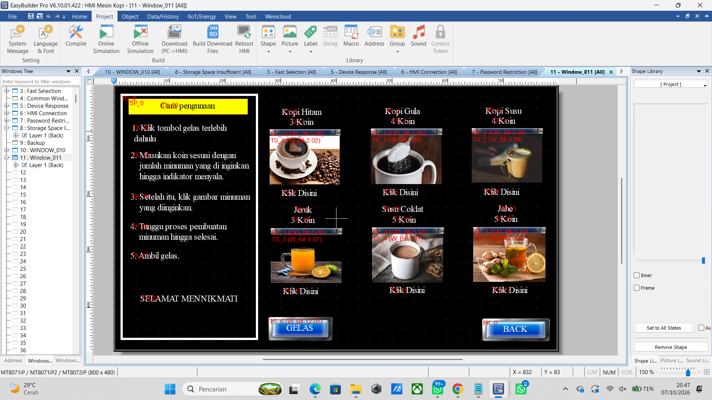
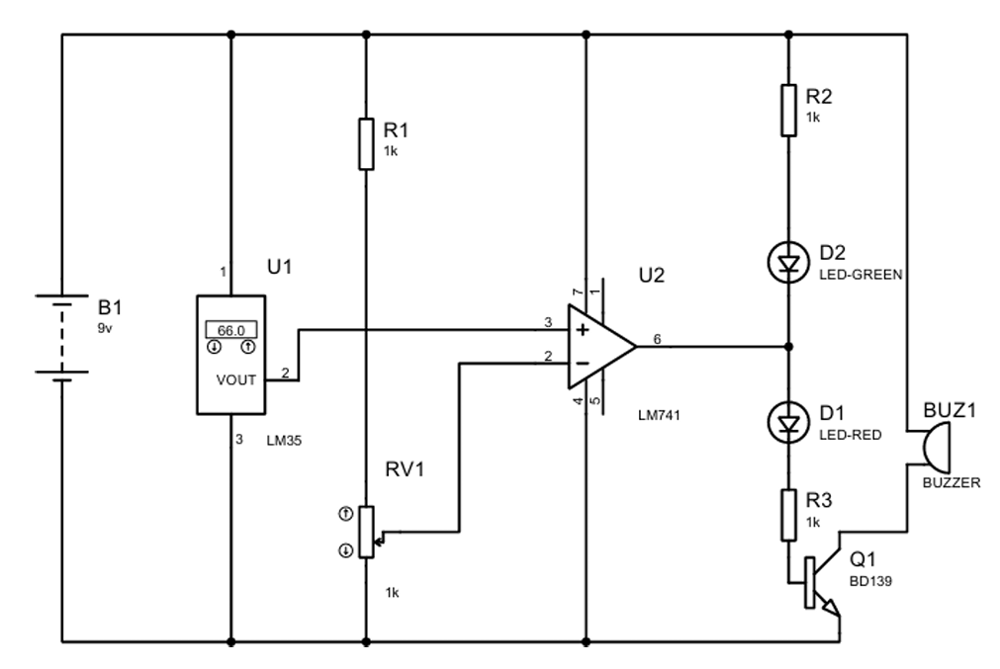
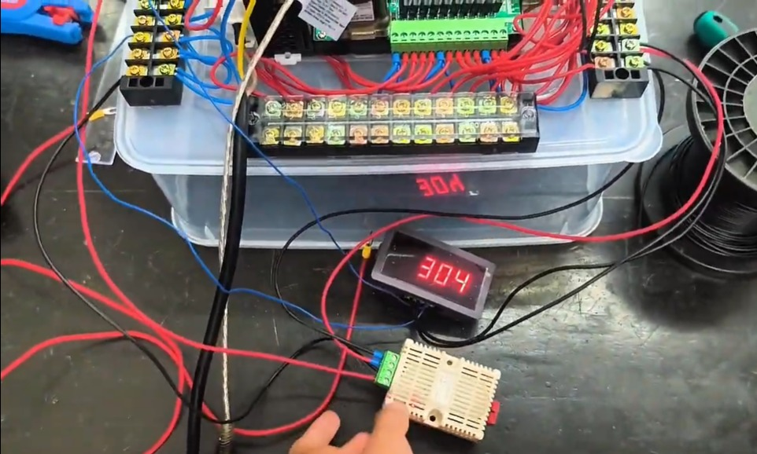
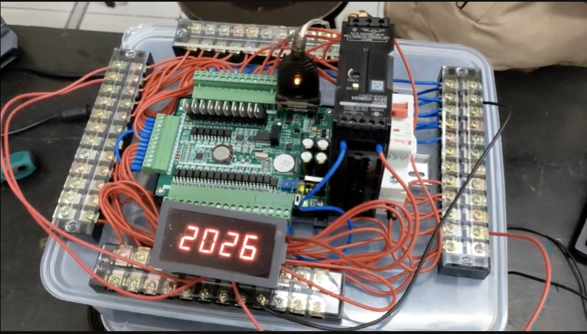

01
Robotika
Self-Balancing Robot
Robot beroda dua dengan prinsip inverted pendulum menggunakan sensor IMU MPU6050 dan algoritma PID pada ESP32 untuk menjaga keseimbangan otomatis.
//HALO, SAYA
Mahasiswa D4 Teknik Mekatronika
Mengeksplorasi dan mewujudkan ide teknologi menjadi sistem nyata melalui pengembangan robotika, otomasi industri, dan desain mekanik di Politeknik Elektronika Negeri Surabaya (PENS).

Pengembangan dan simulasi proyek robot
PLC Programming dan HMI
Sensor, aktuator, PCB, dan desain 3D
01 / PROFIL
Ketertarikan pada teknologi diwujudkan melalui eksplorasi, perancangan, dan pengerjaan proyek.
Saya adalah mahasiswa D4 Teknik Mekatronika di Politeknik Elektronika Negeri Surabaya (PENS) dengan minat pada robotika, otomasi industri, embedded systems, dan desain mekanik.
Saya senang mengembangkan proyek yang mengintegrasikan aspek mekanik, elektronika, dan pemrograman, mulai dari pemodelan 3D dan perakitan hingga pengembangan sistem kendali serta troubleshooting.
Melalui proyek akademik, kompetisi, dan pelatihan teknis, saya terus mengembangkan pengetahuan serta keterampilan praktik. Saya terbuka untuk kesempatan magang, kolaborasi, dan pengalaman profesional.
TECHNICAL TOOLKIT

01Robot beroda dua dengan prinsip inverted pendulum menggunakan sensor IMU MPU6050 dan algoritma PID pada ESP32 untuk menjaga keseimbangan otomatis.

02Program C++ pada board OpenCM9.04 dan servo Dynamixel untuk menerapkan Forward & Inverse Kinematics dalam menggerakkan lengan robot mengikuti lintasan.

03Merancang antarmuka Human Machine Interface (HMI) menggunakan EasyBuilder Pro untuk simulasi pengoperasian mesin kopi otomatis berbasis koin.

04Rangkaian kontrol analog peringatan suhu berlebih menggunakan sensor LM35 dan komparator op-amp LM741 lengkap dengan perancangan jalur PCB.
 05
05
Realisasi desain konseptual 3D ke pembuatan perangkat keras mencakup fabrikasi struktur mekanik, penyelarasan rangka, dan perakitan motor stepper.

06Implementasi komunikasi serial Modbus RTU dengan PLC FX3U sebagai Master untuk membaca data sensor suhu & kelembaban dan menampilkannya ke Seven Segment.

07Implementasi protokol Modbus RTU dengan PLC FX3U sebagai Master untuk menulis nilai register data secara langsung menuju modul penampil Seven Segment (Slave).
03 / RECOGNITION
Kompetisi, pelatihan, dan pengembangan kompetensi teknis maupun organisasi.
UNESA · 2022
Juara 3 divisi Programmable Logic Controller (PLC), tingkat nasional untuk jenjang SMA/SMK sederajat.
LSP P3
Sertifikat kompetensi melalui uji kompetensi bidang pengoperasian peralatan elektronika berbasis PLC.

Komdigi RI × PENS
Pelatihan dan sertifikasi pada bidang fundamental perangkat IoT, administrasi jaringan, dan teknisi jaringan komputer.
 - DEX - Politeknik Elektronika Negeri Surabaya_Hal1.jpg)


BEM PENS · 2024–2025
Pelatihan pengembangan keterampilan manajemen dan kepemimpinan tingkat Pra-Dasar dan Dasar.


Workshop Electro · Polinema · 2024
Partisipasi dalam kompetisi pemrograman Programmable Logic Controller (PLC).
 2024.jpg)
04 / BACKGROUND
EDUCATION
Mahasiswa semester 5.
LEADERSHIP
Mengoordinasikan pelaksanaan program kerja dan kegiatan anggota organisasi.